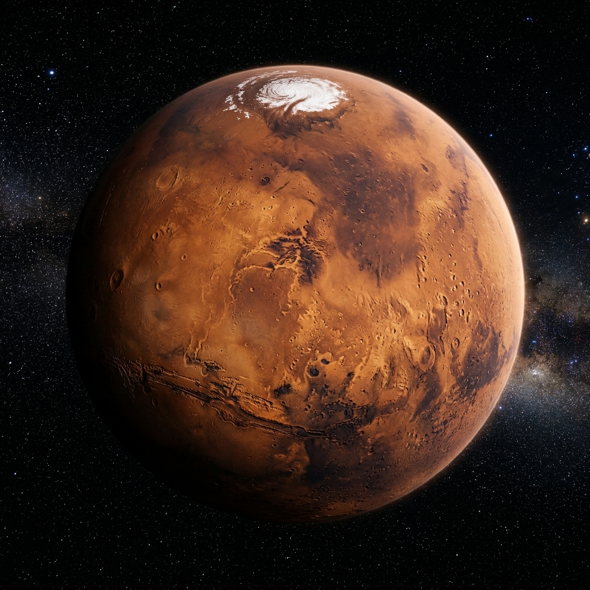

Интерактивное погружение в неизведанные глубины космоса. Откройте для себя тайны планет, гравитационные аномалии и вехи освоения Вселенной.

Четвертая планета от Солнца, названная в честь древнеримского бога войны. Также известна как Красная планета из-за высокого содержания оксида железа на ее поверхности. Здесь находятся гигантские вулканы и каньоны.
Запуск Спутника-1 положил начало космической эре. Человечество впервые вывело искусственный объект на околоземную орбиту.
Юрий Гагарин совершил легендарный полет на корабле «Восток-1», обогнув Землю за 108 минут и открыв дорогу пилотируемой космонавтике.
Американский астронавт Нил Армстронг ступил на поверхность Луны со словами: «Это один маленький шаг для человека, но гигантский скачок для всего человечества».
Частные компании, такие как SpaceX, произвели революцию в ракетостроении с многоразовыми кораблями, приближая колонизацию Марса.
Кликните мышью по холсту внизу, чтобы создать Черную Дыру и затянуть космические частицы в гравитационную воронку.
Введите ваши позывные и контактные данные, чтобы получать сводки межзвездных экспедиций и предупреждения о солнечных вспышках.